Владимир Абрамян. Райские сады детства
За случайной встречей на просторах социальных сетей последовало мое общение с интересным художником Володей Абрамяном.
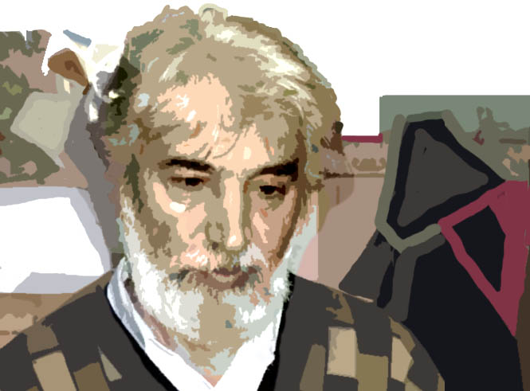
Автор: Эфраим Калиш.
Володя Абрамян живет в селении Эдиссия, расположенном на берегу реки Куры. Основано село в 1797 году, по указу императора Павла I: «Внимая прошению армян Дербента и других окрестностях, препоручаю…». Эдиссийцы – выходцы из села Кильвар на территории современного Азербайджана, тюркоязычные армяне. Название произошло от древнего малоазиатского города Эдесса, в котором, по преданию, жили их предки.
За случайной встречей на просторах социальных сетей последовало мое общение по скайпу с интересным художником Володей Абрамяном. Беседуя с ним и рассматривая его работы, мне захотелось поделиться моими впечатлениями о его творчестве с вами.
Через "рассматривание творений" Всевышнего, в своих пейзажах он свидетельствует о славе Творца. Яркими красками Володя делится своей радостью, исходящей от Небес, радостью, которой наполняет его Всевышний, а он, в свою очередь - других людей. Через пейзаж, или одинокое дерево, полное плодов птиц на его ветвях он выражает свою любовь и прославляет Творца.
Jivan Gasparyan - Eshkhemed / duduk /
Искусство Абрамяна - это своего рода псалмы радости. В его живописи нет прямых иллюстраций Библии, но она, тем не менее, не может быть оторвана от его веры, ею, библейским отношением ко всему, что он видит, пропитаны все его полотна. Своим искусством он свидетельствует о своей вере. Вера наполняет его и определяет всю его жизнь. А его картины - выражение того, чем наполнен художник.
«В свое время я никак не мог объяснить смысл того, что есть у меня в сердце во свете вечности, но постепенно развиваясь в своем творчестве вместе с развитием моей веры, я начинаю понимать - открытый чистый цвет моих полотен исходит от света Евангелия, так любимого мной» - говорит художник.
Живопись Володи Абрамяна
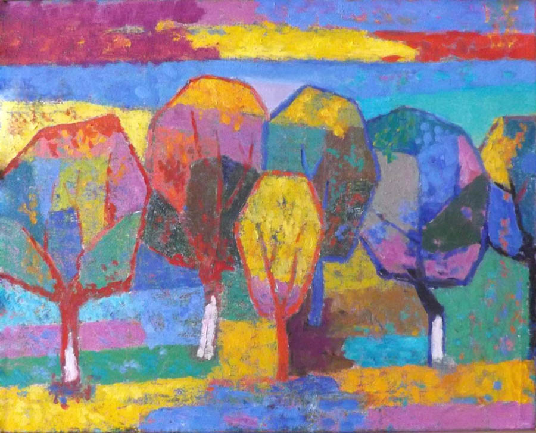
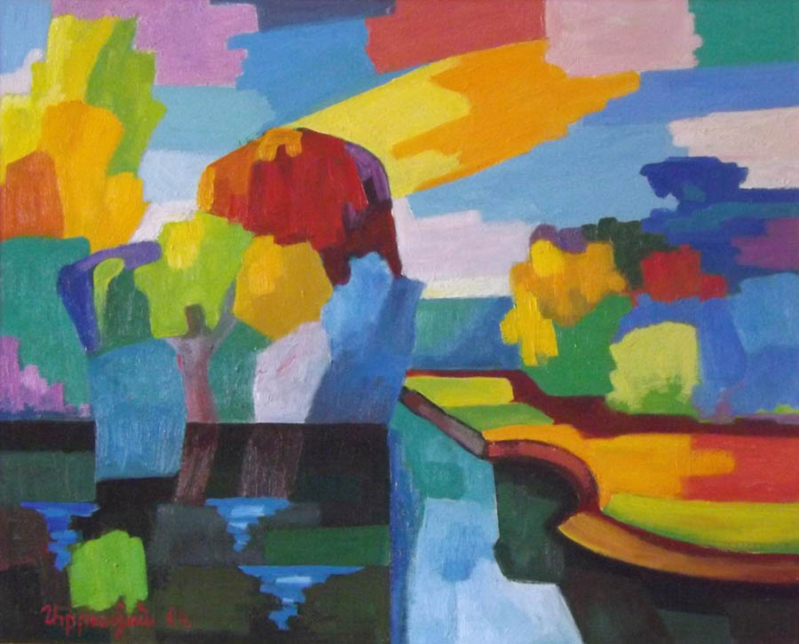
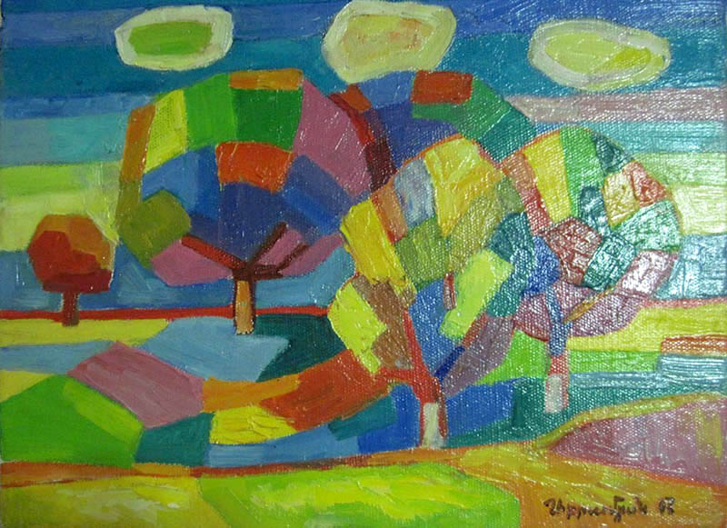
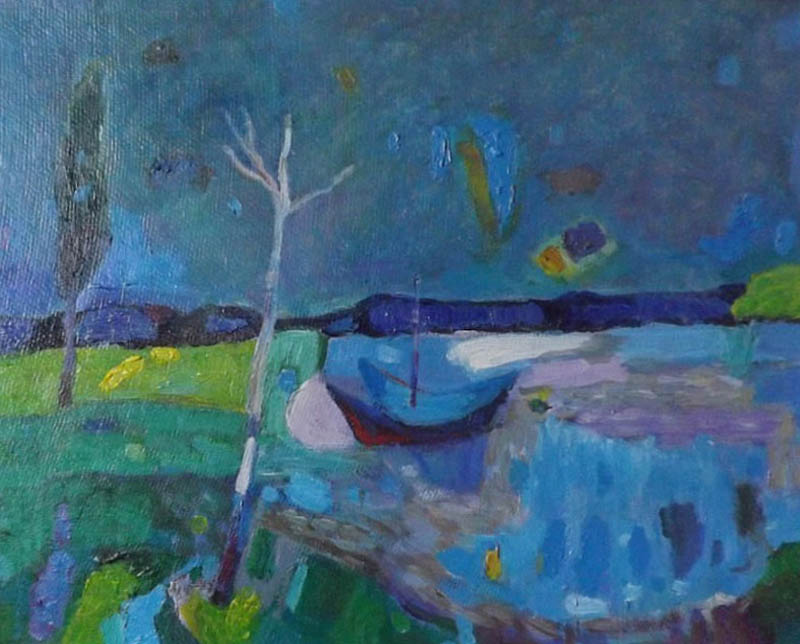
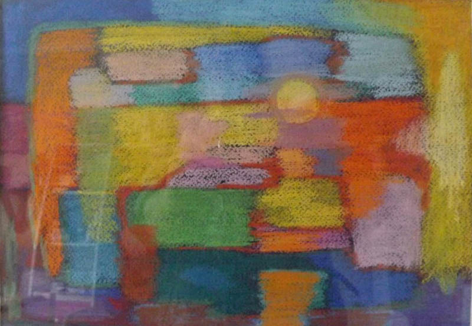
.Одна девочка, глядя на мою картину сказала: «Мне в этом поле хочется кричать, прыгать и бегать, и радоваться». Хотя картина была абстрактная из декоративных цветовых пятен, квадратных, треугольных...
До сих я во сне летаю. Вижу землю, ее красоту и я жадно ее рассматриваю. Во сне я знаю, что я верующий, что проповедник и художник. И с неба я кричу людям: «Люди, смотрите, я летаю потому, что я люблю Бога, это Иисус дал мне способность - видеть». Я часто это вижу и до сих пор. И счастлив во сне, что я еще и художник.
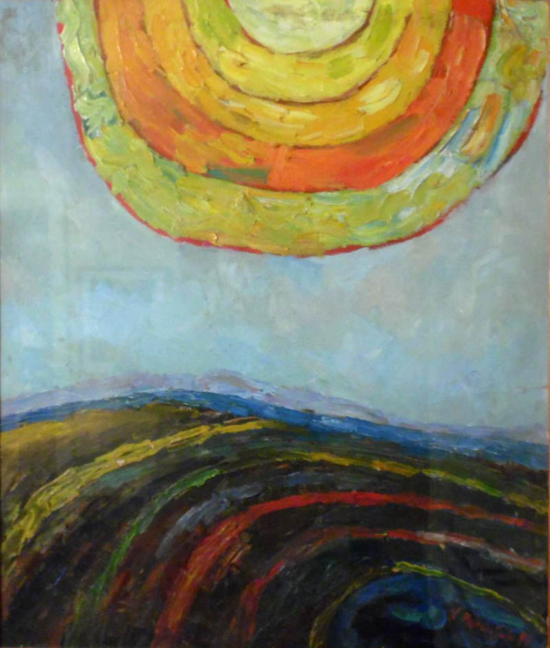
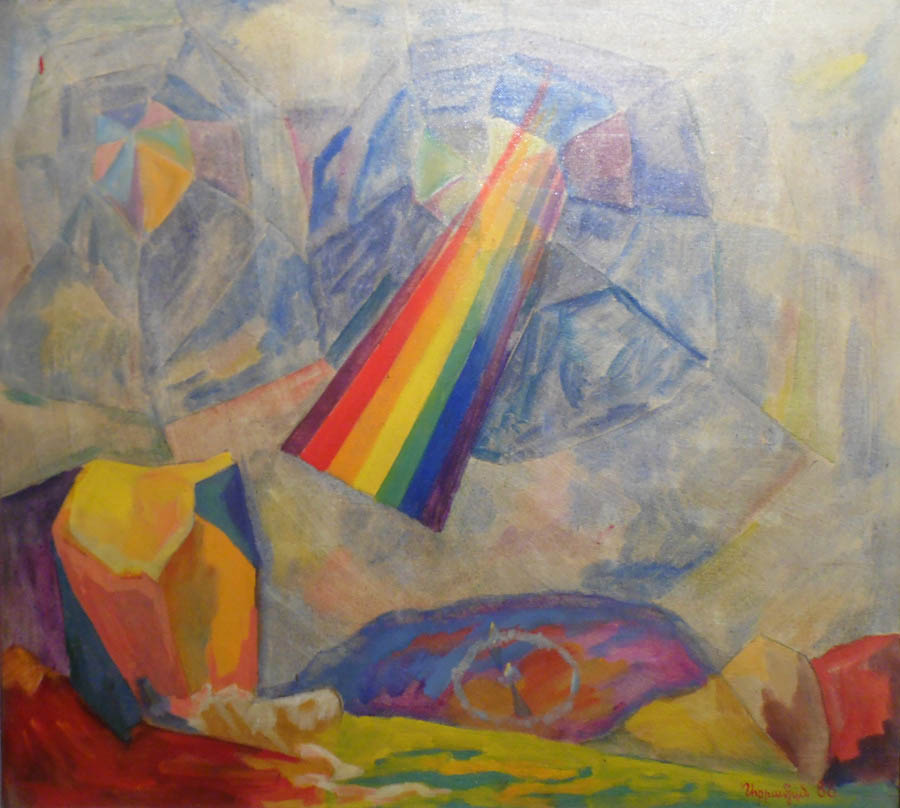
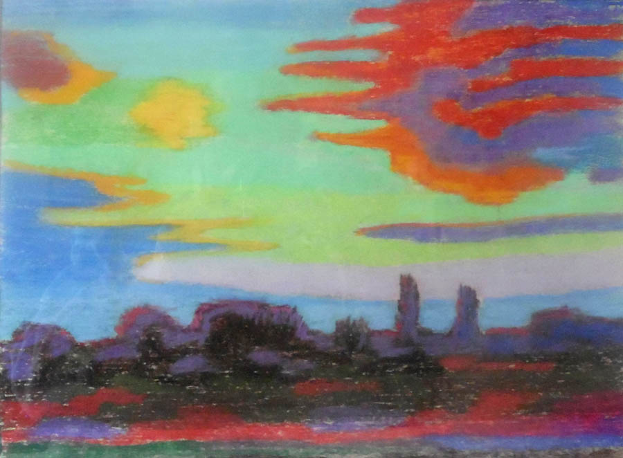
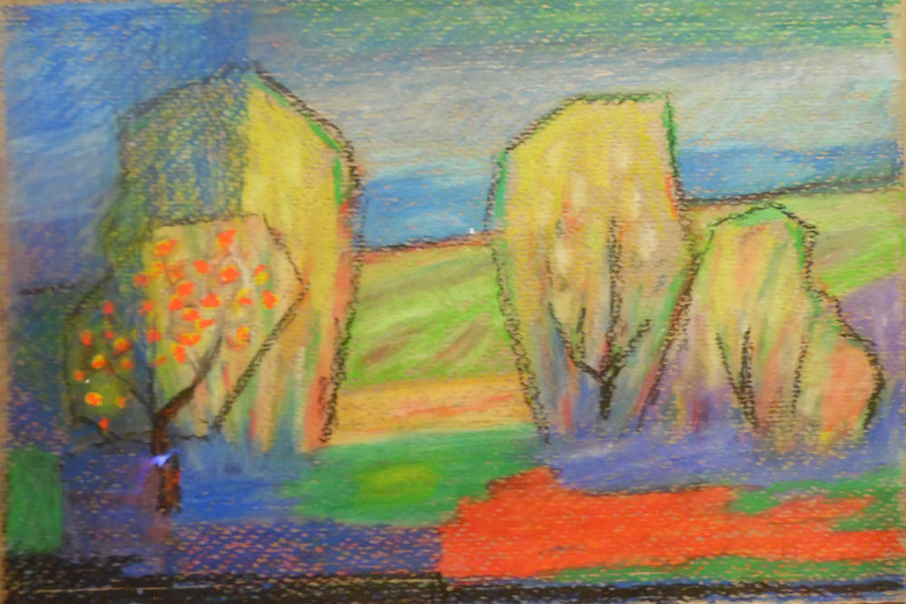
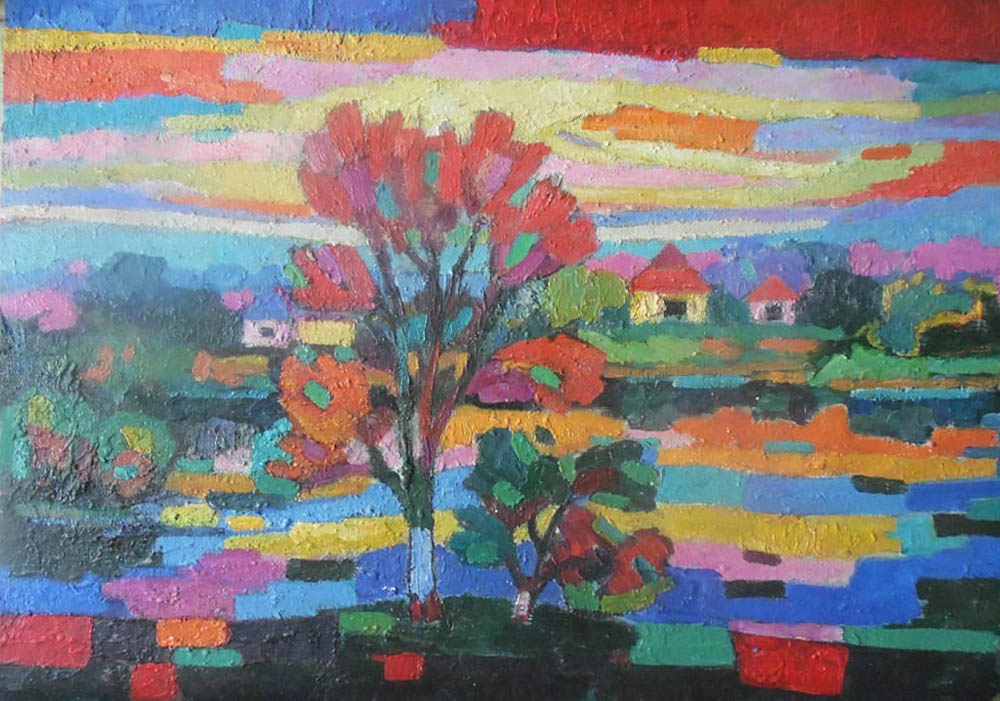
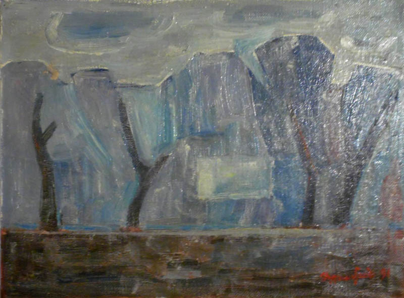
.
Я в детстве был очень впечатлительным ребенком. Я до сих пор помню голубой дождь из моего детства. Мы, маленькие дети, накрывали голову мешковиной и стоя под дождем, смотрели. Дети бегают, кричат, визжат. А я помню, пацаном стою, наблюдаю за этой холодноватой голубизной льющихся струй дождя. И это осталось во мне до сих пор.
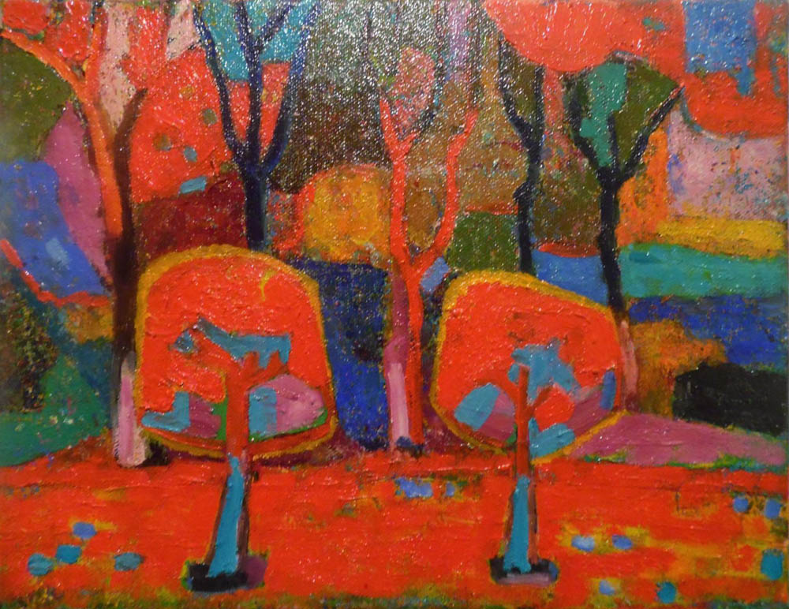
«Мне трудно добавить что-то в мир сотворенный Твой
Только вот хочется где-то все повторить за Тобой
Желтые, синие, красные краски
Сказочный мир на холсте
Чувствую цвет, как ребенок – наивно.
Зрелость и детство смешалось во мне».
Стихотворение Володи Абрамяна, написанное в 2004г, выражает взгляд на его собственное творчество.
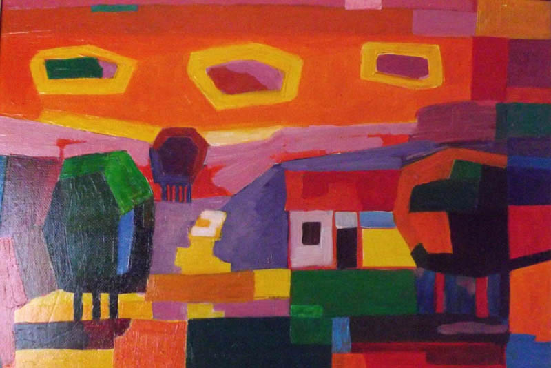
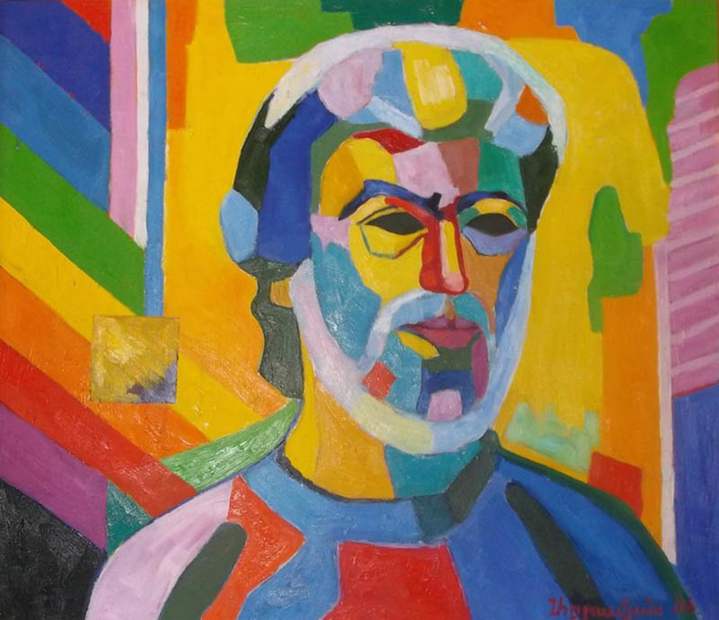
.«Помню одно задание из художественной школы: надо было изобразить лебедя живописно, используя разные краски. Исполняя это задание, одно крыло я нарисовал красным, другое – голову – голубым, желтым – тело, другое крыло – зеленым. И все, как на ковре плоское. Моя тетя недоумевала: почему лебедь нарисован разными цветами? Так я понял объяснения учителя о живописи. Было смешно.
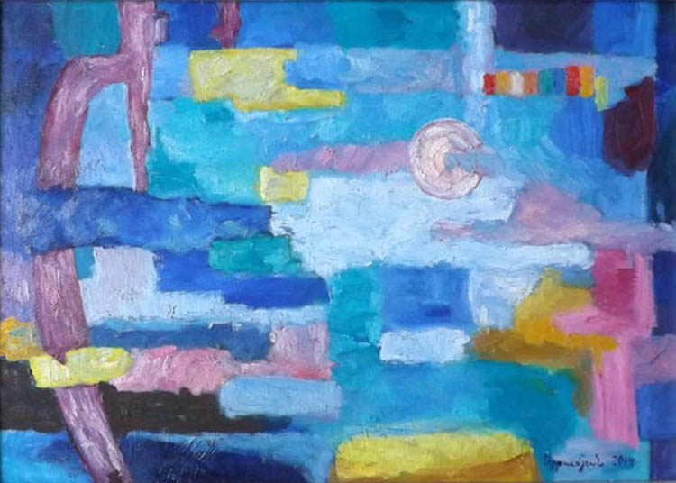
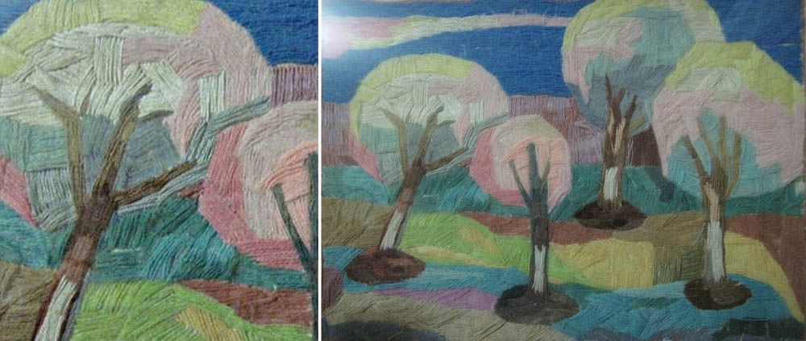
Фатима Абрамян /жена художника/ - вышивка гладью по работе Володи Абрамяна
Мне нравится в картине – насыщенность цвета, заполненная плоскость. Мое восприятие живописи – типа восточного ковра. Думаю, это во мне влияние моего детства, когда все женщины в доме вышивали, все делали картины - вышивки.
Мое творчество во многом несет на себе влияние мира моего детства. Это мои грезы. Потоки света и цвета. Меня более интересует цвет, меньше сам рисунок. Мне хочется пятнами запечатлеть вечность.
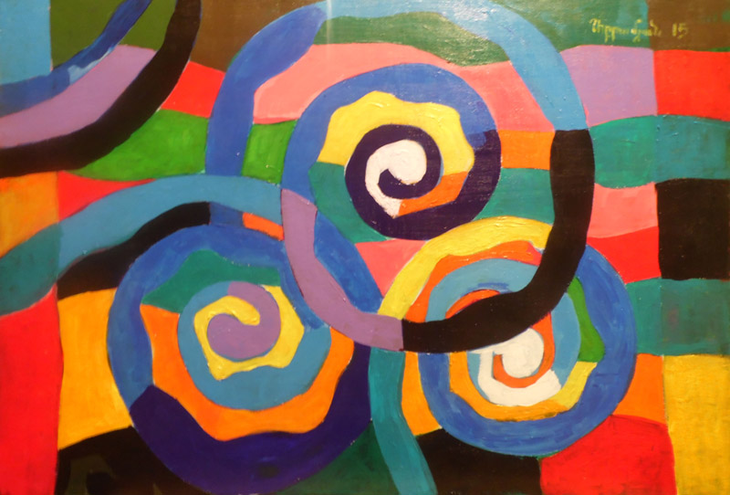
Голос Шофара. Сотворение вселенной